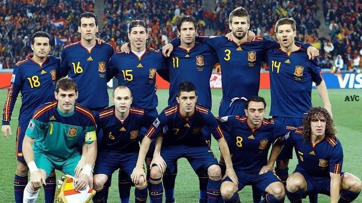
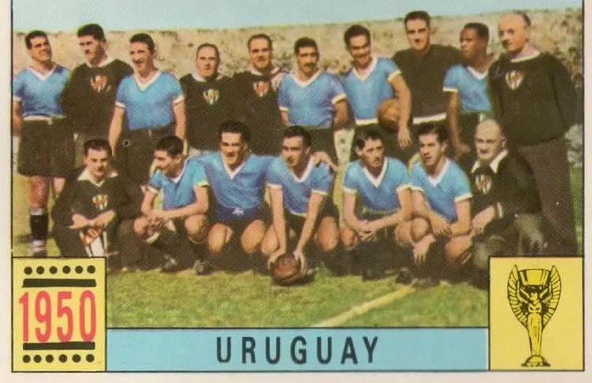

GRUPO H


DETALLE DE SELECCIONES
Estadios, historia, estadísticas, convocados y curiosidades
España 🇪🇸
Campeón 2010📍 Sede / Ciudad: Atlanta (Mercedes-Benz Stadium) / Miami (Hard Rock Stadium)

🏆 Campeón en Sudáfrica 2010
Participaciones (16)
1934, 1950, 1962, 1966, 1978, 1982, 1986, 1990, 1994, 1998, 2002, 2006, 2010, 2014, 2018, 2022, 2026.
Estadísticas Mundiales
31 Victorias | 17 Empates | 19 Derrotas
🏆 Título: 2010
Clasificación al Mundial 2026
Clasificó como 1.º del Grupo E en las Eliminatorias UEFA de manera invicta.
Historia en la Copa
Tras décadas catalogada como la "eterna candidata", alcanzó la gloria en Sudáfrica 2010 gracias a una generación dorada basada en el juego de posesión (Tiki-Taka).
💡 Curiosidad
Es la única selección en la historia en ganar el Mundial habiendo perdido su partido inaugural (0-1 contra Suiza en 2010).
Jugadores Convocados
- Unai Simón
- David Raya
- Álvaro Morata
- Pedri
- Gavi
- Lamine Yamal
- Nico Williams
- Rodri
- Dani Carvajal
- Robin Le Normand
- Aymeric Laporte
- Marc Cucurella
Uruguay 🇺🇾
Bicampeón 1930, 1950📍 Sede / Ciudad: Boston (Gillette Stadium) / New York (MetLife Stadium)

🏆 Campeón en Brasil 1950 (Maracanazo)
Participaciones (14)
1930, 1950, 1954, 1962, 1966, 1970, 1974, 1986, 1990, 2002, 2010, 2014, 2018, 2022, 2026.
Estadísticas Mundiales
25 Victorias | 13 Empates | 20 Derrotas
🏆 Títulos: 1930, 1950
Clasificación al Mundial 2026
Obtuvo su boleto directo al finalizar en el Top 3 de las Eliminatorias Sudamericanas (CONMEBOL).
Historia en la Copa
Pioneros del fútbol mundial: organizaron y ganaron la primera Copa del Mundo en 1930, y silenciaron a más de 170.000 personas en el histórico "Maracanazo" de 1950.
💡 Curiosidad
Uruguay tiene más estrellas en su escudo (4) que títulos mundiales FIFA (2), porque la FIFA reconoce sus dos medallas de Oro Olímpicas (1924 y 1928) como campeonatos mundiales absolutos.
Jugadores Convocados
- Sergio Rochet
- Santiago Mele
- Federico Valverde
- Darwin Núñez
- Ronald Araújo
- Manuel Ugarte
- Facundo Pellistri
- Rodrigo Bentancur
- Mathías Olivera
- José María Giménez
- Giorgian de Arrascaeta
- Facundo Torres
Arabia Saudita 🇸🇦
Sin títulos📍 Sede / Ciudad: Houston (NRG Stadium) / Dallas (AT&T Stadium)
Participaciones (7)
1994, 1998, 2002, 2006, 2018, 2022, 2026.
Estadísticas Mundiales
4 Victorias | 2 Empates | 13 Derrotas
Mejor puesto: Octavos de final (1994)
Clasificación al Mundial 2026
Clasificó directamente en la 3.ª Ronda de las Eliminatorias Asiáticas (AFC).
Historia en la Copa
Sorprendieron al mundo en su debut en EE.UU. 1994 advancing a octavos de final. Desde entonces han sido participantes habituales representando la fuerza de Oriente Medio.
💡 Curiosidad
En Qatar 2022, protagonizaron una de las mayores sorpresas de la historia de los mundiales al vencer 2-1 en la fase de grupos a la eventual campeona Argentina.
Jugadores Convocados
- Mohammed Al-Owais
- Yasser Al-Shahrani
- Salem Al-Dawsari
- Firas Al-Buraikan
- Sultan Al-Ghannam
- Ali Al-Bulaihi
- Mohamed Kanno
- Abdulelah Al-Malki
- Saud Abdulhamid
- Hassan Tambakti
- Abdulrahman Ghareeb
- Ayman Yahya
Cabo Verde 🇨🇻
Debutante📍 Sede / Ciudad: Atlanta (Mercedes-Benz Stadium) / Miami (Hard Rock Stadium)
Participaciones (1)
2026 (Primera participación histórica).
Estadísticas Mundiales
0 Victorias | 0 Empates | 0 Derrotas
⭐ Histórico Debut
Clasificación al Mundial 2026
Clasificó como líder de su grupo en las Eliminatorias Africanas (CAF).
Historia en la Copa
Un país insular de poco más de 500,000 habitantes que logra una gesta histórica al clasificarse por primera vez a la cita máxima del fútbol mundial.
💡 Curiosidad
Es uno de los países con menor población en la historia en clasificarse a un Mundial de fútbol masculino.
Jugadores Convocados
- Vozinha
- Josimar Dias
- Ryan Mendes
- Garry Rodrigues
- Bebé
- Jamiro Monteiro
- Kevin Pina
- Logan Costa
- Roberto Lopes
- Steven Moreira
- Doyle Cabral
- Hélio Varela